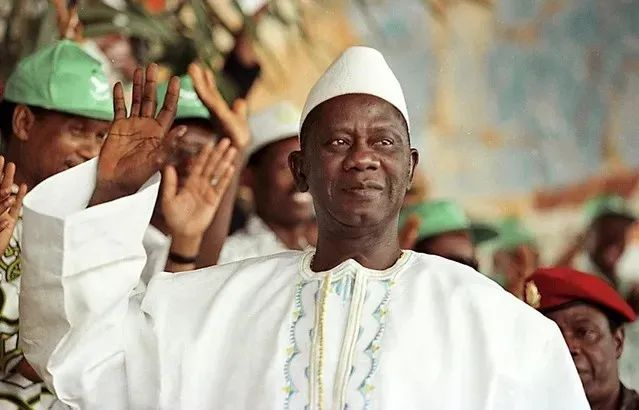
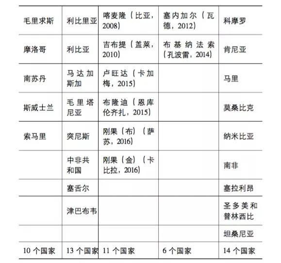
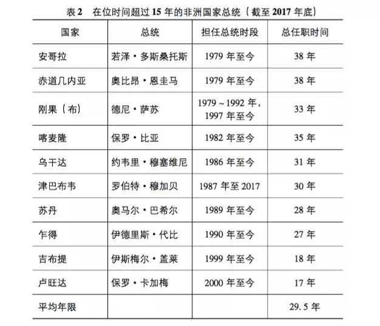
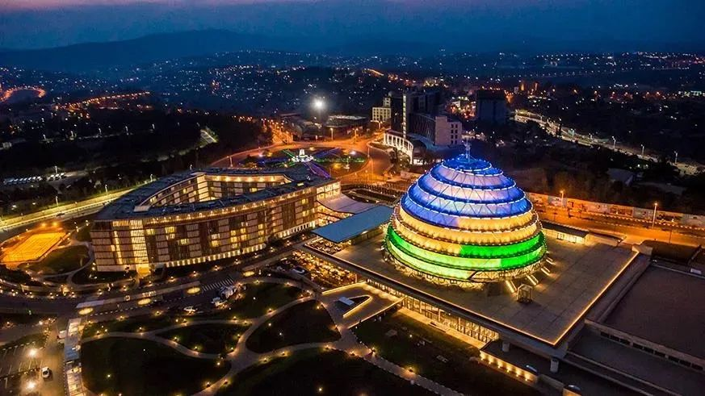

收录于合集
以下文章来源于西亚非洲 ，作者沈晓雷
西亚非洲 .
关注西亚非洲研究动态，发布《西亚非洲》最新内容，搭建编读交流平台

导读
欧亚系统科学研究会 ： 昨日，几内亚发生军事政变，总统孔戴被扣押，军队宣布进入18个月的政治过渡期。此次政变尽管被广泛猜测是由总统与军队的矛盾所引发，但同时也混杂着对孔戴2020年取消宪法总统任期限制并于2021年第三次连任的不满。21世纪以来，非洲民选领袖通过修改或取消宪法条款中的任期限制来实现长期执政的现象频繁发生， 这一现象背后折射了民主政治的形式合法性与非洲“强人政治”传统和对有效治理的需求往往发生冲突。
本文探讨了非洲“第三任期”现象的政治现状与产生原因，并提出“第三任期”实际上是 非洲政治民主化过程中的一种特殊的过渡性安排。 “第三任期”既没有完全遵循民主制度的运转逻辑，但也不是对传统威权政治的复归。它既可能是政治家垄断权力、谋求私利的工具，也可能是国家与人民坚持稳定发展的合理选择。这就要求我们超越形式合法性的抽象视角，从本土化的和过程性的角度去评价非洲民主政治的得失。本文原载于《西亚非洲》杂志，因篇幅所限，文章有删节。文章仅代表作者观点。
作品简介
原标题： 《透视非洲民主化进程中的“第三任期”现象》
作者： 沈晓雷，中国社会科学院西亚非洲研究所助理研究员
来源： 《西亚非洲》2018年第2期第124-146页，欧亚系统科学研究会摘编
关键词： 民主化、非洲、“第三任期”、国家建构、民主巩固
正文
自20世纪80年代末开始的民主化浪潮席卷整个非洲大陆以来，时间已过去近30年。从当前来看，除实行君主制的斯威士兰和实行一党制的厄立特里亚外，其他52个非洲国家均已实行多党制，并定期选举国家的最高领导人。就此而言，这些国家均在某种程度上实现了民主化最为基本的目标，即“选举民主”。然而，纵观非洲各国近30年来的民主化进程，可谓一路布满坎坷与荆棘，尤其是民主化初期，一些国家曾发生严重的政治与社会动荡，如塞拉利昂内战和卢旺达种族大屠杀。时至今日，各种影响非洲民主发展的因素仍然不断凸显，其中包括推迟选举、选举暴力等现象。
所谓“第三任期”现象，是指国家最高领导人（主要为总统制国家中的总统）在宪法规定的任期结束后，通过修改或取消宪法中的任期条款等方式继续参加选举，以求延长自己任期的现象。 本文之所以将“第三任期”现象作为研究对象，并将其与非洲民主政治的发展结合在一起加以讨论，主要基于以下考虑：首先，“第三任期”现象虽然并非为非洲大陆所特有，而是一个世界性现象，遍布拉丁美洲、东欧、亚洲和非洲等地的“第三波”民主化国家，但该问题在非洲大陆更为突出。2002-2016年，非洲共有17个国家的领导人尝试突破任期限制以继续参加总统选举，其中11个成功，6个失败；其次，自2014年底始于布基纳法索的新一轮的“第三任期”现象呈集中爆发之势，在短短两年的时间内，便波及刚果（布）、卢旺达、布隆迪和刚果（金）等国；再次，这一轮“第三任期”现象主要发生在民族问题突出、国家间关系复杂的大湖地区，不但引起布隆迪、刚果（金）等国局势动荡，而且给地区和平与安全带来一定的挑战；最后，“第三任期”现象是在任领导人谋求修改宪法而延长自己任期的行为，这与当前世界绝大多数国家限制任职期限不同，一些学者由此认为这是现象发生国“民主衰退”的体现。
那么，如何看待非洲国家总统大选中的“第三任期”现象？目前学界对此存在较大争议，其中持负面看法的学者居多。他们认为，“第三任期”容易导致权力与政治的去制度化（De- institutionalization），会产生违反人权、腐败和裙带关系等问题，领导人因长期执政而易陷入专制与独裁，不利于非洲民主政治的发展，以及对非盟的“非宪制更迭”议程和非洲的地区和平与安全带来了挑战。而在笔者看来，“第三任期”现象在非洲国家如此广泛，这表明它不是偶然现象，它究竟是“民主衰退”，还是在探寻更符合本国国情的民主发展道路，从而在民主化进程中做出的“特殊政治安排”？
01
非洲“第三任期”现象的出现及其发展
非洲的“第三任期”现象始于20世纪90年代末，它是非洲多党民主化浪潮开始之后的新生事物，或者更确切地说，它是非洲大多数国家在民主化进程中建立任期制所导致的直接结果。
（一） 任期制在非洲的演变
对于非洲大陆而言，在独立后相当长的一段时期内，只有少数几个国家对总统任期进行了限制。根据波尼菲斯·杜拉尼（Boniface Dulani）的统计，非洲大陆在1990年之前颁布的98部宪法中，只有6部宪法曾对总统任期进行了限制，分别为南非的1961年宪法、科摩罗的1978年宪法和1989年宪法、坦桑尼亚的1984年宪法、利比里亚的1986年宪法、突尼斯的1988年宪法。这种情况的出现是各种因素相互作用的结果，其中包括大多数英国前殖民地实行的都是议会制政体，总统只是名义上的国家元首；非洲国家独立后的第一代领导人，如科特迪瓦的博瓦尼、加纳的恩克鲁玛和坦桑尼亚的尼雷尔等，因他们在独立运动中的威望和作用而建立了“强人政治”，对总统任期不设限制；那一时期，非洲大陆军事政变频发，许多领导人是因军事政变、暗杀等暴力手段下台，而非经和平的民主方式下台。
这种局面在20世纪90年代初的民主化之后有了彻底改变。随着民主化的推进和竞争性选举的实施，对国家最高领导人的任期进行限制开始被视为建立和巩固民主的必要条件，任期制如雨后春笋般在非洲大陆建立起来。据统计，在1990-2010年非洲国家出台的64部宪法中，有49部规定了总统任期的最长时限；到2004年的时候，已有38个国家确立了任期制制度。截至2017年底，共有44个国家正在实行或曾经实行过任期制。从目前来看，这些任期制均为两任期限，但单一任期的时间从4年到7年不等，其中埃及、加纳和尼日利亚为4年，利比里亚为6年，赤道几内亚为7年，其他均为5年。
任期制与多党政治、竞争性选举等在20世纪90年代的确立曾一度让人们对非洲的民主化进程充满乐观。然而，随着时间的推移， 自20世纪90年代末起，非洲各国陆续进入民主化后的第三次选举进程，民主化后上台的各国总统开始面临是遵守两任期限下台，还是违反任期制谋求“第三任期”的问题。 在民主制度仍处于巩固过程中的情况下，非洲国家的“第三任期”现象开始凸显。

兰萨纳·孔戴（Lansana Conté）1993年出任几内亚首任总统，为寻求“第三任期”，于2001年的全民公决中取消宪法规定的任期限制。2008年兰萨纳·孔戴在第三任期内因病去世后，几内亚发生军事政变。如今几内亚的政局宛若“昨日重现”。
图源：wordpress
（二） 非洲“第三任期”现象的缘起与发展
**
**
非洲最早出现“第三任期”现象的国家是纳米比亚。根据纳米比亚在1990年出台的宪法，总统任期为5年，只能连任两届。1999年，纳米比亚国民议会以萨姆·努乔马第一次当选总统并非直接选举为由，在宪法中引入一个条款，即允许他第三次参加选举，但此次修宪只适用于努乔马一人。努乔马在2005年下台后，纳米比亚未再出现违反两任限制的情况。
进入21世纪后，“第三任期”现象真正拉开了大幕。2001年，赞比亚总统弗雷德里克·奇卢巴试图取消任期限制但没有成功；2002年，苏丹和多哥成功取消任期限制，规定总统可连选连任，奥马尔·巴希尔和纳辛贝·埃亚德马成功取得连任。此后直到2012年，又有5个国家，即加蓬、乌干达、乍得、喀麦隆和吉布提先后取消任期限制。除了这些成功谋求“第三任期”的国家外，马拉维、尼日利亚、尼日尔和塞内加尔也试图谋求“第三任期”，但没有成功。
非洲国家这一时期谋求“第三任期”现象虽引起了学界的注意，但并没有引起国际社会的广泛关注， 直到2014年始于布基纳法索的新一轮“第三任期”现象集中爆发。 2014年10月，布莱斯·孔波雷欲推动议会表决修宪草案以取消总统任期限制，但最终引发军事政变而被迫下台。在刚果（金），该国总统约瑟夫·卡比拉于2015年1月在国民议会力推选举法修正案，拟在下届总统选举前进行人口普查和重新划分省份，此举被反对派认为是在为修宪连任创造条件，由此导致刚果（金）选举进程陷入僵局，大规模抗议示威活动不断上演。2016年12月，在刚果（金）天主教会的斡旋下，各方达成《全国包容性政治解决方案》，规定总统选举于2017年底举行，卡比拉可留任至新总统选出，但不得修改宪法谋求“第三任期”。2017年11月5日，刚果（金）再次将选举日期推迟到2018年12月23日。在布隆迪，2015年4月，该国总统皮埃尔·恩库伦齐扎以自己在2005年当选总统是通过议会选举为由要求第三次参加总统选举，经宪法法院裁定可参选后，他在当年7月以69.41%的得票率再次当选。在卢旺达，2015年12月，卢旺达在全民公投中以98.3%的比例通过宪法修正案：设置一个为期7年的过渡期，任何人均可参选，总统任期从7年改为5年，可连任一次。根据这一条款，保罗·卡加梅可参加过渡期和此后两次总统选举。2017年8月，卡加梅以绝对优势获选过渡期总统。在刚果（布），2015年10月，政府经全民公投而成功修宪，将总统任期延长至三届，为德尼·萨苏“第三任期”铺平道路；2016年3月，萨苏以60.39%的得票率第三次当选总统。在乌干达，2017年12月20日，该国国民议会通过修改宪法，取消总统候选人不得超过75岁的年龄限制，此举意味着1944年出生的穆塞维尼获得了参加2021年总统选举的资格。 经过这一轮“第三任期”现象的扩散，非洲已有17个国家的领导人试图谋求“第三任期”，其中11个成功，6个失败（见表1）。
表1 非洲领导人的任期问题现状 （截至2017年底）

资料来源：Africa Center for Strategic Studies，“Constitutional Term Limits for African Leaders”，April13，2017. 笔者以此为基础结合2017年12月之前的最新情况整理而成。
02
非洲“第三任期”现象产生的原因
2015年5月，“非洲晴雨表”（Afrobarometer）发布以“非洲公众强烈支持任期限制，反对领导人延长任期的努力”为题的报告，宣称在接受调查的29个总统制或半总统制国家中，平均有75%的人支持将总统任期限制为两任，即便在那些从未实行过任期限制或已经在宪法中取消任期限制的国家也是如此，如乌干达和多哥支持任期限制的比例均超过平均水平，达到80%以上。既然有如此多的人支持任期限制和反对延长任期，而且一些国家在谋求“第三任期”的过程中引发了严重的政治与社会问题，如布基纳法索发生军事政变并导致孔波雷下台，刚果（金）自2015年初以来已爆发多次大规模游行示威并引发骚乱，布隆迪因谋求“第三任期”而引发严重危机，共导致约500人死亡和28万-35万人逃到国外，那么，为何还有那么多非洲国家的领导人试图谋求“第三任期”，而且还大多取得了成功呢？
（一）“强人政治”与传统政治文化
**
**
如前所述，有些非洲国家在独立后建立了“强人政治”，领导人长期担任领导职务，如担任肯尼亚总统15年的乔莫·肯雅塔、担任坦桑尼亚总统23年的朱利叶斯·尼雷尔，以及担任扎伊尔总统32年的蒙博托等。这些领导人之所以能够长期执政，固然大多与他们在国家独立和建设进程中发挥的作用和树立的威望有关，还与非洲国家的立国基础有关，即大多非洲国家独立之初是松散之邦，需要强有力的领导人实现国家维稳的首要任务。直到现在，非洲国家仍秉持稳定为先的理念。此外，传统政治文化的影响也是其中一个重要的原因。张宏明认为，非洲传统政治文化主要包括两个方面的内容：“意见一致”或“一致同意的精神”；权力的神圣化与个人化。这种传统的政治文化“是建立在群体本位价值观念基础上的集权型政治文化”，与“非洲各国独立后随之而实行的中央集权、军人统治、个人崇拜”等有着密切的关系。
**
**
20世纪80年代末以来的民主化浪潮虽然使非洲国家纷纷开始了选举民主之路，但一方面，这种传统的政治文化使民主政治文化短期内难以在非洲落地生根，领导人谋求延长任期和建立威权政治及民众习惯于遵从权威的思想在短期内也仍然很难根除；另一方面，非洲的民主转型是西方强推而非自身政治、经济与社会发展的自然结果，“强人政治”的观念只是暂时遭到压制，一旦存在机会，必然就会出现谋求“第三任期”、寻求长期执政和建立“强人政治”的努力，一些年轻领导人更是如此。也正是因为如此，即便经历了多党民主化浪潮及任期限制成为大多数非洲国家的制度选择，但仍然有10个国家的领导人已经担任总统15年以上，6个甚至长达30年以上，平均为29.5年（见表2）。
表2 在位时间超过15年的非洲国家总统 （截至2017年底）

资料来源：中国外交部网站（2017-08-05）
（二）西式民主政治发展条件不成熟
**
**
虽然非洲各国的民主化进程已经开展了20多年的时间，但毕竟他们所接受的是一种“外科手术式”移植的西式民主模式，其不但受到在观念层面发挥作用的传统政治文化的制约，更重要的是，作为更为直接和更为深层的决定因素：非洲的社会经济结构不但在民主化之初，甚至直到目前都仍然还不能适应非洲民主政治发展的要求，欠发达的商品经济与部族主义（地方民族主义）的影响仍然对非洲民主政治的发展起着严重的制约作用。这就决定了西式民主制度在非洲的推进与巩固需要克服传统政治文化与部族主义的不利影响，需要商品经济的不断发展和非政府组织的逐步成熟，需要在此基础之上经过时间的磨合，经历由表及里的从排斥反应到逐渐适应，再到融合与重生的过程。
当下，非洲大多数国家虽然都已具有西方民主制度赖以存在的一些关键要素，如多党制、行政、立法与司法“三权分立”等，但这些要素在许多国家仍然难言成熟，一些国家在民主政治发展中甚至出现以下三方面的情况：其一，虽然非洲国家都开放了党禁和建立了多党选举制度，但 执政党大多一党独大 ，其他政党或政治反对派均比较弱小和分散，难以在大选中对执政党带来真正的挑战；其二，虽然非洲国家都建立了“三权分立”制度，但由于执政党大多在议会中占据绝对多数席位，因而 行政机构通常都会凌驾于立法与司法机构之上 ，并因此而集中了过多的国家权力；其三，虽然非洲国家一直在致力于实现权力的制度化和从广大民众那里谋取政治合法性，但 新恩庇主义 （Neo- Patrimonialism）之下的政治庇护关系与公共权力的私有化导致权力系统集中于最高统治者。
如此一来，某些在任领导人很容易利用或支配其得以动用的各类资源，从而获得尽可能多的政治支持并以此在大选中获得连任。
（三）领导人现实利益的考量
**
**
毫无疑问，权力相对集中有助于集中力量办大事，但如果权力过度集中，且得不到有效监督或缺乏制衡力量，则容易产生各种各样的问题。在一些非洲国家，总统所具有的这种不可制约的绝对权力容易导致两方面的结果：一是 滥用手中的权力 ，从而出现大量压制政治反对派和非政府组织等违反人权的事件；二是 视国家财产为私人财产 ，尤其在自然资源丰富或能够获得大量援助的国家，往往能够攫取大量财富。
为了获取政治支持，某些当权者还会通过新恩庇主义、权力寻租和政治分赃等手段，将手中的权力、资源和财富提供给被庇护者以获取他们的忠诚与支持。在这一将国家利益与个人利益，将对国家的忠诚与对个人的忠诚相混淆的过程中，许多国家都形成了以总统为首的精英集团或既得利益集团。为了长期保持这些既得利益，在任领导人肯定希望谋求“第三任期”，既得利益集团必然也会极力支持其延长任期的企图。
除此之外，非洲很少有国家会对卸任领导人的退休生活，尤其是安全问题提供保障。对于有些国家的领导人而言，一旦下台，不仅意味着他们失去权力、特权与资源，还可能会因为国内政治斗争或任期内的腐败问题等而被下一任政府所追责，不但因此失去他们此前所获得的既得利益，甚至可能面临被审判，乃至被迫害的命运。而他们所庇护的利益集团，必然也会受到相应的冲击。在这种情况之下，谋求“第三任期”继续执政无疑是他们最好的选择。
（四） 国际社会的矛盾立场
布瑞特·卡特（Brettt L.Carter）认为，来自国际社会尤其是来自西方的压力可以阻遏非洲的“第三任期”现象的蔓延。然而，从当前来看，无论西方国家，还是非盟及非洲次区域组织，都在“第三任期”现象上持有比较矛盾的立场。
从西方国家方面来看，美国和欧洲国家一度对非洲的“第三任期”现象反应强烈，美国前总统巴拉克·奥巴马曾明确反对非洲国家领导人谋求“第三任期”，表示任何人都不能成为终身总统。美国还与欧盟携手制裁布隆迪，大肆抨击刚果（金）、刚果（布）和布隆迪等国谋求“第三任期”的行为。但正如国内一些学者所指出的那样， 美国和欧盟在对待不同国家的态度上因利用价值的大小采取了不同的政策 ，例如因需要借助乍得和喀麦隆打击西非宗教极端组织“博科圣地”，在吉布提设有军事基地，因此就对这3个国家“睁只眼，闭只眼”。法国则更是因为“第三任期”大多发生在法语非洲，担心过度干预引发局势动荡而不主张采用强硬方案。
从非盟及非洲次区域组织来看，虽然非盟在2007年通过《非洲民主、选举和治理宪章》，呼吁成员国要在“规律、自由、公正和透明选举的基础上巩固非洲大陆权力更替的政治文化”，反对“以非法方式获取或维持权力”，其中包括军事政变和“违反政府民主更替原则修订宪法或法律工具”等， 但相对于在军事政变问题上采取制裁和暂时中断成员国资格等措施，非盟在“第三任期”问题上态度比较“温和”，既没有进行干预，也没有采取制裁措施。 非洲的次区域组织，如东非共同体和西非国家经济共同体（简称“西共体”）虽也有禁止成员国违宪更换政府的条款，但它们也没有发挥应有的作用。在布隆迪总统恩库伦齐扎谋求“第三任期”的问题上，东非共同体虽多次召开峰会意图进行干预，但最终与非盟一样没有采取行动。2015年5月19日，西共体在尼日利亚首都召开了第47届首脑峰会，会议讨论了将成员国总统任期限定为两任的动议，但因遭到多哥和冈比亚的强烈反对而最终没有通过。
综上所述，非洲的“第三任期”现象是各种因素相互作用的结果。而如果我们再对这些因素作进一步分析，似可得出如下两个方面的结论：
其一，尽管这些因素均是诱发非洲“第三任期”现象的原因，但商品经济等民主政治发展的社会经济条件尚不具备及由此而导致的西式民主政治条件不成熟，应是其中主要原因，其他方面的因素则需借此而发挥作用；
其二，无论“强人政治”与传统政治文化的影响，还是新恩庇主义和权力寻租等问题，乃至国际社会的矛盾立场，均凸显出西方国家强推的西式民主仍然还不适应非洲国家的社会经济现实，因而也就难以在非洲大陆真正落地生根。
03
“第三任期”现象与非洲国家民主政治的发展
（一）“第三任期”现象的性质
“第三任期”现象是非洲国家在政治民主化进程中基于政权稳定考虑的特殊政治安排，非洲国家民主政治的发展进程并未因“第三任期”现象而逆转。
首先，谋求“第三任期”的非洲国家的领导人为了获取继续执政的合法性，均是通过修改宪法的方式（或是经议会表决，或是经全民公投）进行，没有一个国家会采取超宪法的手段。更重要的是，他们所修改的只是任期限制方面的条款，并没有触及多党制和竞争性选举等对民主而言更为根本的程序性问题，就此而言， “第三任期”现象对民主的冲击要大大低于传统的军事政变或军事独裁。
**
**
其次，就成功实现“第三任期”的国家而言，虽然苏丹、多哥、加蓬、乌干达、乍得、喀麦隆和吉布提等7个国家完全取消了任期限制，但卢旺达和刚果（布）只是修改了宪法中的任期条款，其中卢旺达将在7年的过渡期后实行两任限制，且任期由7年改为5年，刚果（布）则是将两任期限延长为三任期限。布隆迪并没有修改宪法的任期条款，而是宪法法院以恩库伦齐扎第一次当选总统是由议会选出为由，允许其参加第三次总统选举。从法律层面而言，这3个国家仍属于实行任期限制的国家。更重要的是，如果从时间上来看，所有取消任期限制的行为都发生在2010年之前，2010年之后谋求“第三任期”的国家均是通过“软”的方式进行， 这也说明随着时间的推移和民主化进程的推进，已没有国家会通过完全取消任期的方式来实现“第三任期”，这也凸显了相关国家将“第三任期”作为一种“特殊政治安排”的可能性。
**
**
再次，即便在这些成功谋取“第三任期”的国家， 民主观念也已经深入人心。 这可从两个方面加以说明：一方面，从“非洲晴雨表”2015年5月发布的关于任期限制与“第三任期”的报告来看，5个接受调查的“第三任期”国家：乌干达、多哥、喀麦隆、苏丹和布隆迪，在2012年支持总统任期限制的比例均超过50%，其中乌干达和多哥甚至高达85%和83%，而且它们的平均值为71.6%，与整体平均值75%相差无几；另一方面，根据“非洲晴雨表”2016年发布的名为“非洲的民主：需求与供给”的报告，在6个成功谋取“第三任期”的国家中，只有苏丹民众支持民主的比例为44%，其他5个国家均超过60%，其中布隆迪高达86%，位居所有36个受调查国家的首位。
（二）“第三任期”现象与非洲国家的民主巩固
如何在新兴民主国家巩固民主，一直是研究民主问题的学者重点关注的一个问题。对于民主转型之后的新兴民主国家而言，民主巩固往往会成为它们所要面临的一大挑战，这也是塞缪尔·亨廷顿提出所谓“民主回潮”（democracy in retreat）概念的原因。在论及非洲国家民主巩固问题的时候，许多学者都提出了相应的影响因素，如尼克·奇斯曼（Nic Cheeseman）认为应包括单一的国家认同、强大且自主的政治体制、发达且充满生机的市民社会和繁荣且运转良好的经济，安东尼·巴特勒（Anthony Butler）和布鲁斯·巴克（Bruce Baker）则从政权的合法性与国家能否整合民族和宗教分歧等方面进行了探讨。
如果对上述影响因素做进一步归纳与分析，其实它们大多都指向了同一个问题， 即民族国家建构或国家能力的建设问题 ，因为无论政治的稳定与政治权力的制度化，还是商品经济的发展与市民社会的成熟，以及民族与宗教问题的妥善解决，从根本上都取决于国家的治理能力。就此而言，西方国家是在非洲“完全不具备西方社会的文化背景、物质基础、公民理性以及社会整合等条件”的情况下强推民主化进程，而且忽视了非洲本土文化的独特性。也正是因为如此，迈克尔·布拉顿（Michael Bratton）和埃里克·常（Eric Chang）明确指出，“在撒哈拉以南的非洲各国中，新民主制度的确立要依赖于先建设国家能力”，而许多非洲国家的现实是缺乏“强有力的国家”；曾在20多年前提出“历史终结论”的美国学者弗朗西斯·福山，也在新著中由强调自由民主转而强调国家建构与国家能力的建设，并指出真正的政治发展在于国家建设、法制和负责制政府 （民主） 之间的平衡， 而对于非洲而言，其发展的关键阻碍是缺乏有效的国家。 历史不能假设，当下非洲国家已无法回到像西方国家那样先完成民族国家构建再推进民主制度建立、民主转型与民主巩固的时代， 它们需要正视的是在进行统一民族国家建构的同时，推进民主转型与民主巩固 。 一方面，与西方国家不同的政治发展史决定了非洲国家推进民主化进程更为艰难；另一方面，我们也必须认识到世界上没有完全相同的民主政治模式，无论是民主转型，还是民主巩固，都不能脱离一国特定的社会政治条件和历史文化传统来评判，非洲国家需要探索本土化的民主政治模式。
“第三任期”现象虽会偏离西方为非洲国家所设计的西式民主发展的轨道，但因任期延长而导致权力集中于总统、执政党和行政机构， 反映的却是当前一些非洲国家发展优先、维稳至上的执政理念 ，即通过强政府、强政党，乃至“强人政治”来维持和促进经济发展与政治稳定，从而解决“逢选易乱”等民主选举乱象、解决民生、实现民族国家建构，并最终实现“非洲式”民主政治发展的理念。
在论及非洲的任期限制问题时，凯瑟琳·纳马库拉（Catherine S.Namakula） 曾指出，任期限制可能会导致不稳定并中断政府的规划。而对于出现“第三任期”现象的非洲国家而言，虽然有些国家因领导人谋求连任而出现了短暂的混乱局面，但大多数还是因强有力的政治领导人的存在而实现了较为长期的稳定和保持了较为连续的发展政策。也正是因为如此，它们当中的大多数国家近年来在经济发展方面都取得了令人瞩目的成就。

卢旺达在卡加梅长期领导下取得不俗的经济发展成就，被誉为“非洲新加坡”。
图片来源：africa-ontherise.com
经济发展不仅有助于改善民生和提高人民的生活水平，更重要的是，它有助于提高政府的合法性和增加政府可资利用的资源，有助于社会的稳定和民族与宗教矛盾的解决，有助于中产阶级的发展和市民社会的培育乃至成熟，而这些因素相结合，无疑有助于国家建构和塑造民主巩固和民主政治发展所需的基础条件。
综合以上因素，“第三任期”现象所凸显的是非洲民主化进程的复杂性与长期性。尽管“第三任期”现象可能致使权力向总统、执政党和行政机构集中，但已经很难再会形成绝对专制或个人独裁。在非洲各国日益谋求自主性发展的大背景下，我们或许可将“第三任期”现象视为相关国家基于本国历史文化和社会政治条件对西式民主或西式民主化进程所主动做出的反应，而这种反应所凸显的则是这些国家为探索符合本国国情的民主巩固方式和民主发展道路而做出的尝试。
排版 | 屈媛媛
本文来自《西亚非洲》，由欧亚系统科学研究会摘编，
文章观点不代表本平台观点。